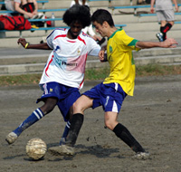
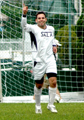
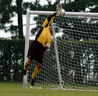
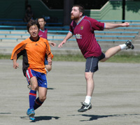
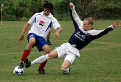

OLD STORIES - Oct 2006
Barbarians & Stoneds Satisfied with Draw.
 |
|
Leon Hulme lobs the Stoneds keeper only to see his effort agonizingly clear the bar! |
Oi Futo, Sun 29th Oct. The Barbs team bus rolled up to the Famous Oi Futo Dirt Stadium on a day where conditions were perfect for a display of the beautiful game, unfortunately the pitch looking remarkably like the new Wembley before they lade the grass, wasn't going to suit the silky skills of the Barbs academy of football.
Barbs lined up in the new strip, well ten of us did, the other players deciding to sleep off their hangovers on the back of the bus, so some American bloke decided he'd show us how they play "soccer" back in the states and help us make the bare 11.
more from Barbarians...
LH.
YCAC Get the Better of Geckoes.
YC&AC, Sun 29th Oct. It had been a most unusual start to the season for YCAC1, conceding 6 goals in their 1st 2 games against 12 for the whole of TML3. The last 3 games have been reassuringly familiar though, a hammering from Sala followed by 2 clean sheets and squeaked wins, as well as a smattering of toys on the ground around Joes prambulator. TML3 has merged into TML4
more from YC&AC...
ST.
|  |
|
Ata Ahmed Keeps Riaz Donaldson busy! |
Shane Succumb to Prowling Lions
Oi Futo, Sun 29th Oct. The muddy field of Oi was not the best time for Lions to unveil their new white kit or even play after a 6 week absence.
Lions again were missing some crucial players, this time the back four! Defensive midfielders filled in for the defence, and some confidence was inspired by the debut of the experienced keeper Mike.
10 minutes into the game, Lions fell victim to a clever quick free-kick by Shane, playing their winger onside, who stepped into the 18 yard box and unleashed a venomous shot to the right of the keeper, who had no chance.
more from Lions...
HS.
Super-Sala-Go-Ballistic-Jetro-Are-Atrocious!!!
 |
|
Stuck in the mud, 'OiFuto's finest hour!' |
Oi Futo, Sun 29th Oct. Ok, so not really ballistic. More like the speed of a fat man crawling through ankle deep mud. And Jetro weren’t really atrocious, but I’ve wanted to use this purloined headline for ages and Jetro happen to have the right number of syllables, plus I don’t think any of them read these things so they’re a soft touch on the complaints front.
Yes the only atrocious thing yesterday was the pitch.
A night of heavy rain had turned Oifuto Dirt into Oifuto Mud. Picture if you will the Battle of the Somme in early autumn 1916.
“Message from the front line Sir, we’ve scored!”
“Very good Wadkins, tell the lads to drop back over the half-way line and we’ll bally well have another go at them.” And so on…
more from Rodders...
RC.
 |
|
Busy day in the office for 'Beef' Jyrki, he could only parry this effort into the path of Yama! |
Hungry Hibs Devour BFC.
St Mary's 28th Oct. The BFC were undefeated in the current season, conceded very few goals and had been described by several good judges and even more poor judges as “revitalised”. The BFC were missing a few key players and surprisingly showed up for their acid test with a bare 11. The Hibs had a strong squad of 14, but also had a few key personnel not available.
Hibs began strongly and Tomo was continuing with his top form, skipping past defenders and creating openings.
more from Hibs...
BC.
 |
|
Simon Bromwell & Mark Eite try out a new move. |
Geckoes Rise Above the JETs.
Misato, Sun 22nd Oct. It's been a while but WSG finally managed to get a full team out for the first time this season, and what a difference a good squad can make. WSG opened the scoring on the 20-minute mark after Mikkel Troen went on a run in the 18 yard box, having gone past about 5 challenges he was brought down in the area. Taking the penalty himself he made no mistake from the spot.
WSG kept on the attack and really should have been at least 3 up at half time having squandered a few chances, which may have been attributed to the bobbly conditions on the Misato grass.
more from WSG...
GS.
YC&AC Edge Past Fiesty Celts.
YC&AC, Sun 22nd Oct. This was a competitive and hard fought game between two organised and committed teams, never in danger of being accused of beautiful football. Little separated the two sides apart from some tactical shouting from the YCAC bench that ultimately settled the issue. The Celts played well throughout but struggled to penetrate the YCAC defence which played a high line to squeeze the skilful Celts midfield (well that was the plan anyway).
more from YC&AC...
KM.
 |
|
Alex Babulall stoops to conquer, scoring on his debut for BEFC. |
Embassy Keep Pressure on Zion.
Misato, Sun 22nd Oct. The British Embassy maintained its perfect start to the season, beating a tough Wall Street Clash side with a battling performance and two unanswered second half goals. In Indian summer heat and the dust of the Misato riverbank, goals from Steve "Crouchie" Lidbury and debutant Alex Babulall were enough to bag the three points and keep BEFC on track for TML Division One.
The first half was close-run, with BEFC maybe shading it. Steve missed the Embassy's best chance of the opening 40 minutes... more from BEFC...
SC.
|  |
|
Brian Gallagehr celebrates his first of 2 goals |
Sala Remain Thorn in YCAC's Side.
YC&AC, Sun 15th Oct. A thoroughly entertaining game of football was fought out on the heights of YCAC’s ground despite the perennial wind, which often dictates the areas of action at this venue. The grounds man can take great credit having watered the pitch in the morning and for having left the grass a decent length; the two combined to allow a level of controlled football, which isn’t always associated with this ground
YCAC went into the game minus several first team players but started with the wind at their backs. The first twenty minutes saw a game with a tight, highly contested midfield and no shots to test either keeper. The only moment of note was a superbly executed free kick from Andres which found Toby behind the wall but his header lacked the killer touch.
more from Sala...
AC.
AFC Take the Points
|  |
|
The YC&AC keeper is unable to keep out Captain Ben Smith's 2nd half lob. |
YC&AC, Sun 15th Oct. After taking a point against Shane the week before, knowing they should have had all three, AFC were determined to take three against YCAC 2nds. The order of the day was to “finish strong”, tiredness and mistakes towards the end of the game has always been AFC’s trademark and today we were determined to do things differently. A fitter stronger AFC lined up on a windy Sunday morning against YCAC 2nds.
Central defenders Mark and Jim, “four runs this week”, were flanked by Trent at right back and Tobias at left back. The midfield saw Brian and new signing Tony flanked by Eric on the left and Tomo on the right. Ben and Dai started up front with Jeff, Shinki and Primo warming the bench. Andy Cross from Sala kindly helped out in between the sticks as our regular keeper had a “business engagement”. more from AFC...
Ben.
 |
|
BFC's Evans looking more like the karate kid! |
BFC on the Climb.
YC&AC, Sat 14th Oct. BFC climbed to second in the TML first division with a convincing 4-1 victory over the Geckoes on Saturday despite cocking up two penalties. American import Terry Welliver scored twice for BFC, who preserved their unbeaten record ahead of the top-of-the-table clash with leaders Hibs.
more from BFC...
BS.
A deserved win by BFC with both teams struggling to get full squads out on the day.
BFC opened the scoring after 15mins from a contentious penalty decision and although WSG keeper Rob got a hand to it he couldn't do enough to keep it out.
more from Geckoes...
Gaz.
 |
|
James Absolom beats Hitoshi Ono to the ball, only to see his header go inches wide. |
Top gun Tomo Penetrates YCAC Defences.
St Mary's, Sat 7th Oct. Stunned silence is becoming the norm after YCAC games this season. "WTF just happened?" said the BFC after letting 10 man YCAC off the hook a while back at Misato. "WTF just happened?" pondered the YCAC at 4.30ish on saturday at St Mary's.
Close your eyes, lose your focus, lose your shape or all of the above against the Hibs and you'll end up losing a game 4-1 that you really ought to have won more from YCAC...
ST.
It was a perfect day Saturday on the million-dollar pitch at St. Mary's and the TML's top two squads were up for it. Plenty of drama here - last year the Hibs won the war but lost the battle, as YCAC was the only team we didn't beat.
The teams have very different styles, with YCAC's shock and awe devastation through long balls and crosses versus the Hibs quick passing and Yama's custom-made gold shoes. Both teams were missing key midfielders, with Anthony Savage from YCAC off due to a red card and Bevan "bicycling in Chiba." more from Hibs...
JA.
|  |
|
Maritizio defender Devon has nice form but... |
Maritizio Struggle to Find Form.
Oi Futo 1, Mon 9th Oct. Going by the previous day’s whether it could be expected that both teams may have been relishing a game on a nicely moist Oifuto pitch. Instead however we ended up with a perfectly pleasant day, with the now familiar solid stony Oifuto pitch under an emerging sun.
Maritizio went into this game with a “must win” scenario to continue any hopes of promotion next season. The game started in typical fashion with both teams settling down early on, but with STONEDS having most of the action. more from Maritizio...
VG.
French See Red as BFC Break Deadlock
|  |
|
Jon Best utilizes the famous crane technique! |
Misato, Sun 1st Oct. An impressive performance against a temperamental France FC team saw BFC emerge victors earning themselves their first victory of the season following a string of draws against TML’s stronger teams. The game was full of incident and concluded on the wet grass at Misato with the French reduced to 9-men and flamboyant referee Pietro Cristo vowing never to officiate another TML game again.
BFC started the game poorly failing to clear their lines on the slippery surface and the French were gifted the first goal of the game with a simple tap-in that left BFC keeper Beef Jryki little chance. This was enough to awaken the sleeping beast that was BFC and in an instant the team responded, playing two-touch football out of the back and hitting the strikers on the move from midfield – Al Himmer holding up the ball well, shrugging off defenders and laying off simply to the overlapping runners.
more from BFC...
BFC.
 |
|
Kuni Hosoi prepares to block Jetro. |
Hibs Keep Firing in the Goals.
Misato, Sun 1st Oct. The long trek out to Dasaitama proved to be well worth it as the Hibs put in their best performance of the season so far. The weather was perfect and the pitch was a nice grass surface, perfect conditions for a game of football. more from Hibs...
BC.
Celts Dealt Swiss Kickin'
Misato, Sun 1st Oct. Swiss vs. Celts on a great day for a match at Misato – nice grass and a cool cloud cover meant that all the excuses in the world couldn’t help – ability was going to be the deciding factor on the day. The Celts are a decent side, relegating the Irish players to defense and using all nationalities in attack – Czechs, Japanese, and some Latin flair more from Swiss...
KN.